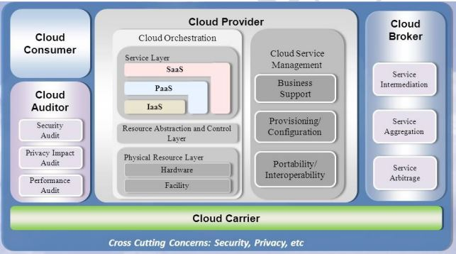

Le Cloud joue un rôle vital dans un processus de digitalisation.
FMF
Publié le 01/02/2023
Temps de lecture: 8 mins.
TABLE DES MATIÈRES
- INTRODUCTION
- I. DEFINITION DU CLOUD COMPUTING
- II. CARACTERISTIQUES DU CLOUD COMPUTING
- III. MODELES DE SERVICES DU CLOUD COMPUTING
- IV. MODELES DE DEPLOIEMENT DU CLOUD COMPUTING
- V. ENJEUX DU CLOUD COMPUTING
- VI. APPORT DU CLOUD COMPUTING A LA TRANSFORMATION DIGITALE
- CONCLUSION
- Introduction
- L’adoption de la transformation digitale est devenue, au jour d'aujourd'hui, un must qui nécessite l’utilisation de plusieurs types de technologies pour automatiser divers tâches et améliorer la performance des processus, notamment l’intelligence artificielle (apprentissage automatique), l’analytique, et bien d’autres et lesquelles, exigent beaucoup de puissance de calcul et de stockage pour traiter les énormes volumes de Big data produits quotidiennement par divers médiaux digitaux et dont ont besoin les organisations pour des prises de décisions éclairées, comme par exemple pour améliorer leurs interactions avec leurs clients.
Comme les organisations, ne disposent pas d'infrastructues dôtées de cette puissance de calcul et de stockage en raison du coût élevé de l'investissement, ces dernières se sont en quelque sorte trouvées prises de court. Et c’est là, que le cloud computing est venu à point nommé pour apporter des solutions idoines aux organisations en termes de stockage, traitement et analyse du Big Data.
- I. définition du cloud computing
- Le Cloud Computing est d'un ensemble de mécanismes informatiques articulés autour de technologies IT, pour mutualiser, partager et créer à partir de ressources physiques, une infrastructure virtuelle sous forme de contextes isolés, capables de fournir des services optimisés aux utilisateurs locaux et distants.
- Le NIST définit le cloud computing dans son standard SP 800-145 comme suit: "Le cloud computing est un modèle permettant un accès réseau omniprésent, pratique et à la demande à un pool partagé de ressources informatiques configurables (par exemple, réseaux, serveurs, stockage, applications et services) qui peut être rapidement approvisionné et libéré avec un minimum d'effort de gestion ou d'interaction avec le fournisseur de services. Ce modèle de cloud se compose de cinq caractéristiques essentielles, de trois modèles de service et de quatre modèles de déploiement."

- Source: NIST
- II. Caractéristiques essentielles
- Le NIST (National Institute of Standards and Technology) a défini cinq caractèristiques de Cloud Computing:
- Libre-service à la demande: Un consommateur peut fournir unilatéralement des capacités informatiques, telles que le temps de serveur et le stockage en réseau, selon ses besoins, automatiquement, sans nécessiter d'interaction humaine avec chaque fournisseur de service. service.
- Large accès au réseau: Les capacités sont disponibles sur le réseau et accessibles par le biais de mécanismes standards qui favorisent l'utilisation par des plates-formes hétérogènes de clients légers ou lourds (par exemple, téléphones mobiles, tablettes, ordinateurs portables et postes de travail), tablettes, ordinateurs portables et postes de travail).
- Mise en commun des ressources: Les ressources informatiques du fournisseur sont mises en commun pour servir plusieurs consommateurs à l'aide d'un modèle multi-locataires. modèle multi-locataires, avec différentes ressources physiques et virtuelles affectées et réaffectées dynamiquement en fonction de la demande du consommateur. en fonction de la demande du consommateur.
- Élasticité rapide: Les capacités peuvent être fournies rapidement et de manière élastique, dans certains cas automatiquement, pour s'étendre rapidement vers l'extérieur et vers l'intérieur en fonction de la demande. Pour le consommateur, les capacités disponibles pour le provisionnement semblent souvent illimitées et peuvent être appropriées dans n'importe quelle quantité et à n'importe quel moment.
- Service mesuré: Les systèmes en cloud contrôlent et optimisent automatiquement l'utilisation des ressources en s'appuyant sur une capacité de mesure1 à un niveau d'abstraction approprié au type de service (par exemple, stockage, traitement, bande passante et comptes d'utilisateurs actifs), stockage, traitement, bande passante et comptes d'utilisateurs actifs). L'utilisation des ressources peut être surveillée, contrôlée et signalée, ce qui assure la transparence tant pour le fournisseur que pour le consommateur du service utilisé.
- III. Modèles de services
- Le NIST (National Institute of Standards and Technology) a défini trois modèles de Services de Cloud Computing:
- Software as a Service (SaaS): Le SaaS ou en français "Logiciel en tant que Service". Dans ce cas de figure, le matériel, l'hébergement, le cadre d'application et le logiciel sont virtualisés. Les clients n'achètent plus le logiciel mais l'utilisent à la demande, en payant à l'usage réel. Le logiciel est hébergé chez le fournisseur, dans son propre data-center.
- Platform as a Service (PaaS): Le PaaS ou en français "Plateforme en tant que Service". Dans ce cas de figure, le matériel, l'hébergement et le cadre d'application sont virtualisés. Les clients "poussent" leurs applications existantes dans le Cloud, ou développent de nouvelles applications avec les outils proposés par les fournisseurs.
- Infrastructure as a Service (IaaS): L'IaaS ou en français "Infrastructure en tant que Service". Dans ce cas de figure, Seul le matériel (serveurs) est virtualisé. Les clients peuvent démarrer ou arrêter à la demande des serveurs virtuels (Linux ou Windows) hébérgés dans les datacenters du fournisseur de services cloud, sans avoir à se soucier des machines physiques sous-jacentes, et des coûts de gestion qui sont liés (remplacement de matériel, climatisation, électricité etc.).
- Functions-as-a-Service (FaaS)*: Le Faas ou en français "Fonctions en tant que service" est un nouveau modèle de service cloud sans serveur (Serverless Cloud) qui a été introduit en 2017 par Amazon AWS. Il se passe de la gestion de l'infrastructure car, le fournisseur de services cloud se charge de déployer des ressources informatiques à la demande pour exécuter le code des utilisateurs (développeurs). Cela se produit chaque fois qu'un événement ou une demande est déclenché. Les fonctions sans serveur s'exécutent dans des conteneurs du type "Kubernete" sans état (stateless), ce qui signifie que les ressources informatiques (RAM, etc) ne sont déployées que lorsque la fonction est invoquée.
- IV. Modèles de déploiement
- Le NIST (National Institute of Standards and Technology) a défini quatre modèles de déploiement de Cloud Computing:
- Cloud Public Infrastructure cloud accessible à un large public qui appartient à des fournisseurs de services cloud dont les services, sont loués à tous types d'organisations.
- Cloud Privé: Infrastructure cloud fonctionnant pour une organisation unique. Elle peut être gérée par l'organisation elle-même (Cloud Privé interne) ou par un tiers (Cloud Privé externe). Dans ce dernier cas, l'infrastructure est entièrement dédiée à l'organisation et est accessible via des réseaux sécurisés de type VPN.
- Cloud Hybride: Infrastructure se composant de deux clouds ou plus (Privé, Communautaire ou Public), qui restent des entités uniques, mais qui sont liées par une technologie normalisée ou propriétaire, permettant l'interopérabilité des applications et l'intégration des données appartenant à des clouds différents.
- Cloud Communautaire: Infrastructure cloud partagée entre plusieurs organisations appartenant à une communauté précise et ayant des préoccupations communes.
- V. ENJEUX DU CLOUD COMPUTING
- Bien que le cloud computing offre de nombreux avantages, il comporte également des enjeux que les organisations doivent absolument relever et tenir compte de certaines considérations spécifiques tout au long du processus de transformation digitale. Parmi ces enjeux et considérations spécifiques, les plus importants sont:
- Sécurité et protection des données privées: Il est primordial de garantir la confidentialité et la sécurité des données dans l'informatique dématérialisée. Les organisations doivent mettre en œuvre des mesures de sécurité robustes et se conformer aux réglementations pertinentes, telles que les GDPR(s) ou autres règlementations.
- Compléxité d'intégration: L'intégration de systèmes existants sur site avec des services en cloud peut s'avérer complexe et nécessiter une planification et une exécution minutieuses.
- Verrouillage par les fournisseurs de services cloud: Les organisations doivent être prudentes quant au verrouillage de la part des fournisseurs de leurs services cloud, car cela les rendra fortement dépendantes des services d'un fournisseur de cloud spécifique. L'adoption d'une stratégie multi-cloud ou cloud hybride peut atténuer ce risque.
- Coût de gestion: Même si les services cloud peuvent réduire les coûts, une mauvaise utilisation ou un manque de surveillance peut entraîner des dépenses imprévues. Une gestion efficace des coûts est donc de mise.
- Compétences et formation: Les organisations doivent s'assurer que leur personnel IT dispose des compétences et de la formation nécessaires pour gérer et optimiser efficacement les ressources du cloud computing.
- VI. Apport du cloud computing à la transformation digitale
- La transformation digitale s'appuie sur l'utilisation stratégique de technologies digitales pour changer fondamentalement la façon dont les organisations fonctionnent et apportent de la valeur à leurs clients. Et à ce titre, le cloud computing figure en pôle position parmi ces dernières car, il joue un rôle essentiel en permettant et en soutenant divers aspects d'un processus de transformation digitale en y apportant de nombreux avantages dont, entre autres:
- Évolutivité et flexibilité: Les services du cloud computing permettent aux organisations d'augmenter ou de réduire leurs demandes de services informatiques en fonction de la demande. Cette évolutivité aide les organisations à s'adapter rapidement aux changements des conditions du marché, de créer et lancer de nouveaux services, ainsi que de gérer efficacement les pics de charge de travail. Sachant que la transformation digitale implique souvent l'expérimentation et l'innovation, la flexibilité du cloud s'avère donc indispensable.
- Rapport coût-efficacité: Puisque le cloud computing offre un modèle de paiement à l'utilisation des services demandés, les organisations peuvent de ce fait réduire leurs dépenses d'investissement et leur coût total de possession. Elles ne paient en effet que pour les ressources qu'elles consomment, éliminant ainsi le besoin d'investir dans du matériel et des infrastructures sur leurs sites.
- Agilité et vitesse: Le cloud computing accélère le développement et le déploiement de solutions digitales. De plus, les développeurs peuvent avoir accès à une large gamme d'outils et de services pour créer rapidement des applications. Cette agilité permet ainsi aux organisations de répondre promptement aux demandes de leurs clients, de déployer des mises à jour et d'améliorer leurs offres digitales.
- Analyse des données et perspectives: Les plateformes de cloud computing offrent de puissants outils d'analyse de données et d'apprentissage automatique (machine learning) qui permettent aux organisations de tirer de précieux enseignements de leurs données. Et, les informations qui en découlent, aident à la prise éclairée de décisions stratégiques et alimentent l'innovation, sachant que ces deux aspects sont cruciaux pour la réussite de projets de transformation digitale.
- Collaboration et travail à distance: Le cloud computing facilite la collaboration et le télétravail en fournissant une plateforme centralisée pour le stockage et l'accès aux données, documents et applications. Cela est particulièrement important dans le contexte des écosystèmes digitaux, où la flexibilité et le télétravail constituent un corollaire incontournable.
- Reprise après sinistre et continuité de service: Les solutions de reprise après sinistre basées sur le cloud computing garantissent que les données et applications critiques sont protégées et peuvent être rapidement restaurées en cas de catastrophe, améliorant ainsi la résilience globale de l'entreprise
- Sécurité et conformité renforcées: Les principaux fournisseurs de services en cloud investissent massivement dans l'infrastructure de sécurité et les certifications de conformité. Les entreprises sont ainsi assurées que leurs données sont stockées et gérées avec des mesures de sécurité solides, dépassant souvent ce qu'elles peuvent réaliser par elles-mêmes.
- Portée globale et expansion du marché: Les services en cloud sont accessibles dans le monde entier, ce qui permet aux organisations d'étendre leurs activités et d'atteindre de nouveaux marchés sans avoir besoin d'une infrastructure physique sur chaque site. Cette portée mondiale peut être un moteur important des efforts de transformation digitale.
- Conclusion:
- Le cloud computing s'est imposé au fil du temps comme une technologie incontournable, étant donné qu'il offre aux organisations des services innovants de stockage, de traitement et d'analyse et de sécurisation de volumes faramineux de mégadonnées, ainsi que l'évolutivité et l'agilité dont elles ont besoin pour améliorer la performance de leurs opérations et, fournir ainsi de la valeur à leurs clients.
Aussi, en adoptant le cloud, les organisations peuvent se positionner à l'avant-garde de la révolution digitale et rester ainsi compétitives sur un marché en constante mutation.